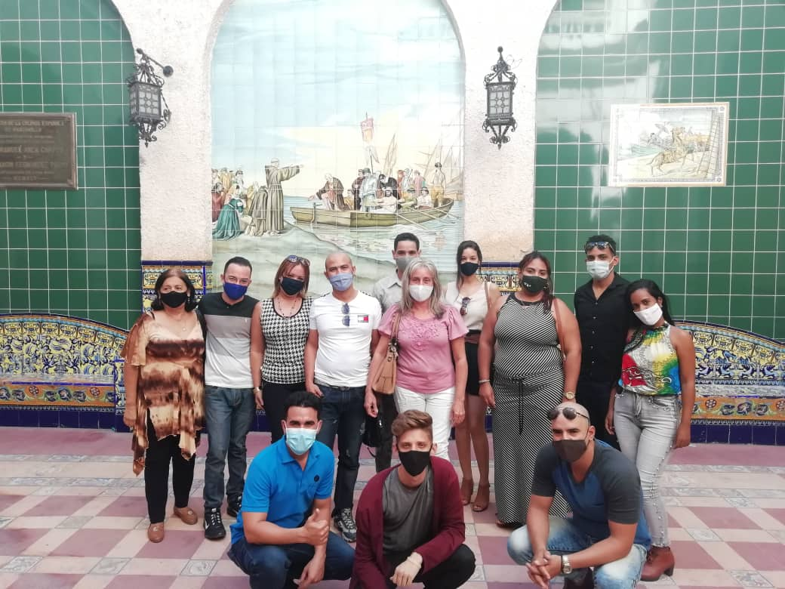
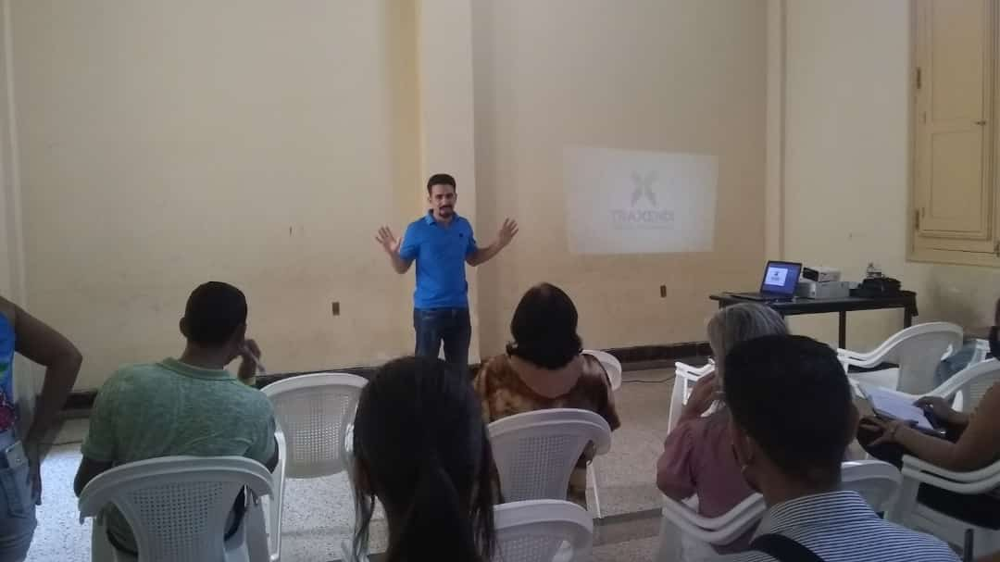
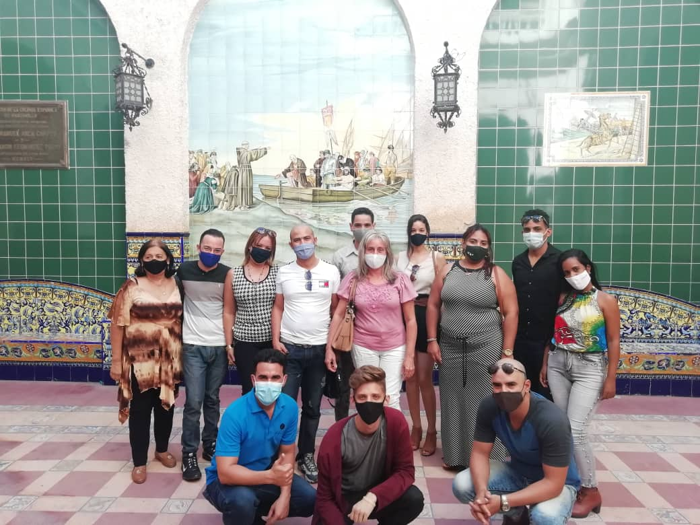
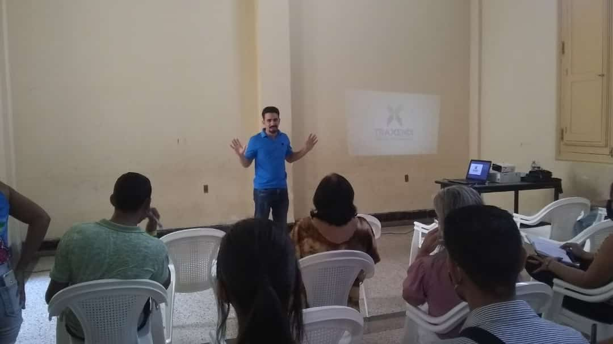

Sobre mi
Mi nombre es Guillermo Santiesteban Hernández, tengo 27 años y en el día de hoy me siento bendecido por esta gran oportunidad, llamada: Coaching Ontológico, la cual ha llegado a transformar mi vida.
Desde edades muy tempranas siempre fui un ser muy tímido, donde me aterraba
acercarme a otras personas y
crear nuevas amistades y relaciones, esto generaba que mis resultados en la vida eran muy pobres, escasos
y siempre dejando mucho que desear.
Llegó el momento donde tuve un quiebre, y la sensación de que
debía modificar esta realidad, ya que comparaba mis resultados con los de otras personas y sentía que
tenía que modificarlos, crecer y expandirme. Empecé a tomar acción, y de tanto preguntar, buscar y
averiguar, pude atraer a algunos libros hacia mí, los cuales me condujeron a otros libros muchos más
poderosos y profundos y sucedió que pasó a convertirse en una adicción, hasta que empecé modificar mi
forma de pensar, valores y creencias.
Todo esto despertó mi interés de forma inmediata y tuve la
sensación de que se abría un nuevo mundo, un nuevo despertar. Toda la información que consumía me
resultaba muy interesante, pero realmente no la tenía de forma organizada, ni planificada, ni contaba con
algún método profesional para el logro de mis objetivos, hasta que un día atraje a mi mundo algo
diferente: El Coaching Ontológico, esta oportunidad fue la que realmente estaba esperando para mí, en este
nuevo mundo empecé a unificar todos los conocimientos que había adquirido y logré potenciarme de forma
exponencial.
Hoy en día ofrezco esta gran oportunidad a todo aquel que desee transformar su vida y
obtener resultados extraordinarios en su vida.
Coach Ontológico
Es una disciplina que ayuda a interpretar a los seres humanos, sus interacciones y comportamientos y a que logren los objetivos que se proponen tanto para sí mismos como para sus empresas y la sociedad. En un proceso de coaching ontológico el crecimiento se da en el dominio del ser, a través de un aprendizaje transformacional, que incluye la modificación de nuestro observador de la vida, nuestras interpretaciones de la realidad, las conversaciones que tenemos y los juicios que generamos hacia nosotros mismos. El Coaching Ontológico deviene en un proceso liberador del sufrimiento y de las creencias condicionantes y limitantes: conecta a las personas con sus propios recursos y con la capacidad de intervenir, logrando mayor bienestar y efectividad en los resultados personales, financieros y empresariales.
El papel del Coach
El Coach Ontológico Profesional está capacitado para intervenir en los diversos dominios de la vida humana, incluyendo el ámbito personal, financiero y empresarial, a partir del establecimiento de sesiones, las cuales pueden ser presenciales u online. A través de la conversación, el coach ontológico es capaz de intervenir en las interpretaciones de los clientes, a partir de las cuales construyen su existencia, para así ayudarlos en la búsqueda de un cambio. Por ello el coaching ontológico es un arte más que una serie de técnicas, principios y reglas. No es una simple tecnología de trabajo, se trabaja sobre la base de conversaciones, donde el factor fundamental es la comunicación y las preguntas poderosas que logra crear el coach, las cuales rompen los propios paradigmas y creencias del cliente o coachee.
Logros
Como conferencista motivacional en el ámbito del desarrollo personal y profesional se han alcanzado los siguientes resultados:
Personas satisfechas
Proyectos
- Cursos
- Conferencias
- Giras
- Becas Otorgadas
- Franquicias vendidas
Horas de entrenamiento
Certificacion Internacional.
2020
Coach Ontológico Profesional, con profundización en Oratoria y PNL, certificado internacionalmente por la Confederación Mundial de Coaches (CMC) y la Asociación Latinoamericana de Coaches(ALC).
conferencista
2020 - Presente
Como conferencista motivacional en el ámbito del desarrollo personal, he impartido conferencias por diferentes provincias de Cuba, con excelentes resultados.
Entrenamientos para la vida
Cursos completos de Entrenamiento para la vida, donde se abordan temas de coherencia, emociones, corporalidad, lenguaje, diseño de futuro, tensión creativa y tensión emocional, escucha.
obtencion del pin de Director de país
2020 - Presente
Por los resultados alcanzados con la Confederación Mundial de Coaches (CMC) y la Asociación Latinoamericana de Coaches(ALC), he obtenido el pin de Director de país, donde ofrecemos los servicios de becas con certificación internacional para la formación online de coaches ontológicos profesionales.
Networker
2018 - Presente
Desarrollo de Redes de Mercadeo con la venta de Franquicias de la empresa, para hacer que el dinero trabaje para nosotros y tener la oportunidad de acceder a conferencias internacionales con los principales líderes en el desarrollo del coaching ontológico.
Servicios

Capacitaciones de desarrollo personal
En las capacitaciones de desarrollo personal se trabaja fundamentalmente la transformación del observador que estamos siendo, que tiene que ver con nuestro ser, a través de nuestras creencias, valores y paradigmas, para eso proporcionamos nuevas distinciones y conocimientos a los alumnos. Buscamos la coherencia entre los tres dominios fundamentales: lenguaje, cuerpo y emoción, para encontrar la felicidad
Contratar Servicio
Sesiones de coaching personalizadas
La sesión de coaching personalizada se enfoca en el diseño de un plan de acción para el logro de metas y objetivos, para ello se busca acortar la brecha que existe entre la situación actual y el objetivo o meta final.
Contratar ServicioVenta de Productos
Becas
ELa CMC(Confederación Mundial de Coaches) y la ALC(Asociación Latinoamericana de Coaches) brinda la oportunidad de que otras personas puedan estudiar y certificarse a nivel internacional como Coach Ontológico Profesional, mediante un curso online donde obtendrán todas las distinciones y conocimientos para transformar sus vidas, las vidas de los que les rodean y poder brindar sus servicio. Todo por un precio muy asequible y económico.
Conocer más...Franquicias
El desarrollo personal, espiritual y financiero deben ir de la mano y en equilibrio, por lo que la CMC y la ALC, brinda la oportunidad de que generes ingresos de forma pasiva con la compra de franquicias que te generan rentabilidades mensual, y además puedes participar en eventos internacionales, con intensivos de alta calidad, rodeado de los principales líderes del Coaching Ontológico
Conocer más...Galeria de eventos
Magnam dolores commodi suscipit. Necessitatibus eius consequatur ex aliquid fuga eum quidem. Sit sint consectetur velit. Quisquam quos quisquam cupiditate. Et nemo qui impedit suscipit alias ea. Quia fugiat sit in iste officiis commodi quidem hic quas.


 



Testimonios
Magnam dolores commodi suscipit. Necessitatibus eius consequatur ex aliquid fuga eum quidem. Sit sint consectetur velit. Quisquam quos quisquam cupiditate. Et nemo qui impedit suscipit alias ea. Quia fugiat sit in iste officiis commodi quidem hic quas.
Proin iaculis purus consequat sem cure digni ssim donec porttitora entum suscipit rhoncus. Accusantium quam, ultricies eget id, aliquam eget nibh et. Maecen aliquam, risus at semper.

Saul Goodman
Ceo & Founder
Export tempor illum tamen malis malis eram quae irure esse labore quem cillum quid cillum eram malis quorum velit fore eram velit sunt aliqua noster fugiat irure amet legam anim culpa.

Sara Wilsson
Designer
Enim nisi quem export duis labore cillum quae magna enim sint quorum nulla quem veniam duis minim tempor labore quem eram duis noster aute amet eram fore quis sint minim.

Jena Karlis
Store Owner
Fugiat enim eram quae cillum dolore dolor amet nulla culpa multos export minim fugiat minim velit minim dolor enim duis veniam ipsum anim magna sunt elit fore quem dolore labore illum veniam.

Matt Brandon
Freelancer
Quis quorum aliqua sint quem legam fore sunt eram irure aliqua veniam tempor noster veniam enim culpa labore duis sunt culpa nulla illum cillum fugiat legam esse veniam culpa fore nisi cillum quid.

John Larson
Entrepreneur
Contacto
Magnam dolores commodi suscipit. Necessitatibus eius consequatur ex aliquid fuga eum quidem. Sit sint consectetur velit. Quisquam quos quisquam cupiditate. Et nemo qui impedit suscipit alias ea. Quia fugiat sit in iste officiis commodi quidem hic quas.
Direccion:
Holguin, Cuba
Email:
guille@ejemplo.com
Telefono:
+5354252298